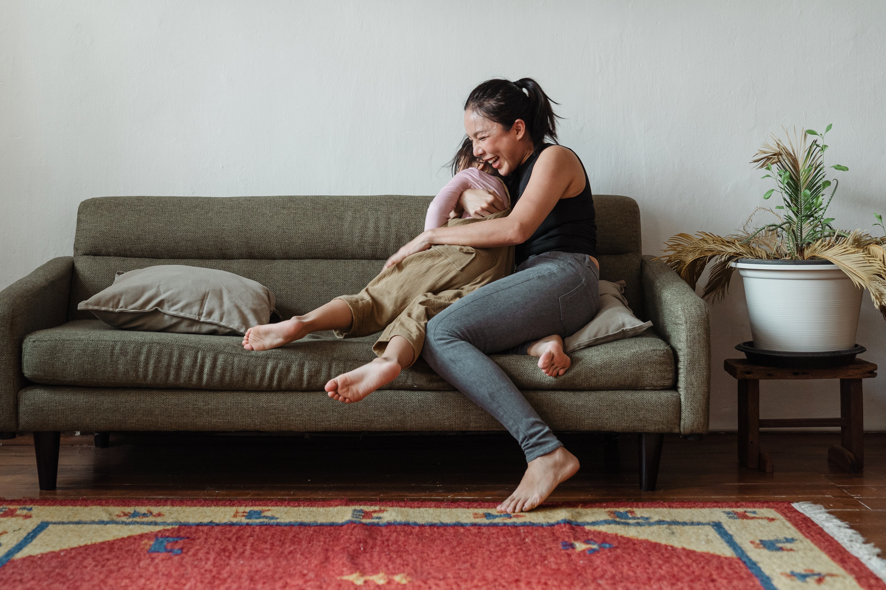
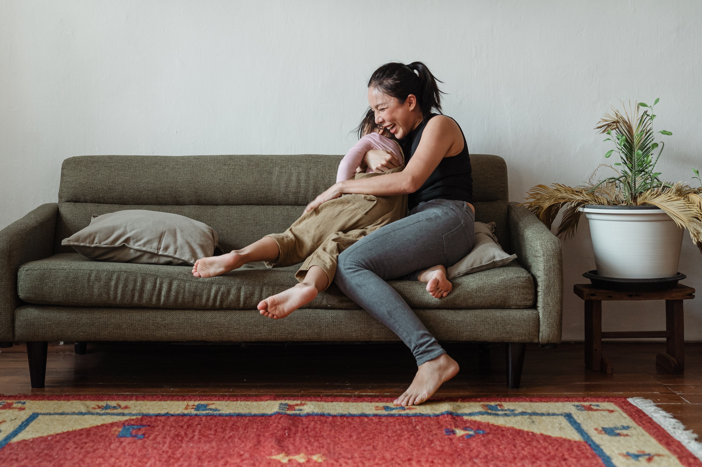

Acerca de mi
Hola! Soy Caro Carreón, maestra, psicóloga y mamá
Mis primeros meses como mamá fueron muy difíciles, Valentina no dormía más de dos horas seguidas y la arrullábamos hasta 3 horas para que lograra conciliar el sueño. Todos estábamos agotados y muy irritables.Me rehusé a aceptar que la maternidad era eso, no tener energía ni querer hacer algo más que estar en pijama todo el tiempo y que los días fueran igual día tras día. Esto me llevó a investigar todo lo que puede del sueño infantil y ¡Ahí encontré mi pasión!

 
